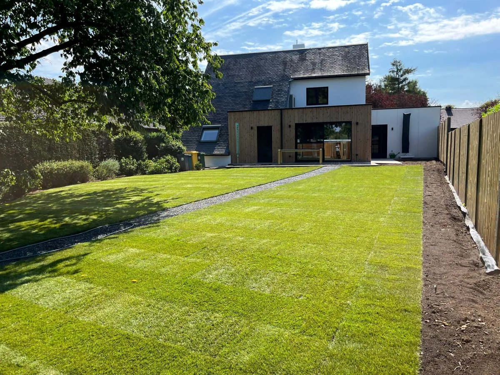
Tuinaanleg
Van een nieuwbouwtuin die nog volledig moet gebeuren tot een grondige make-over van je bestaande tuin.
- Grondwerken
- Beplanting
- Terrassen en opritten
- Afsluitingen
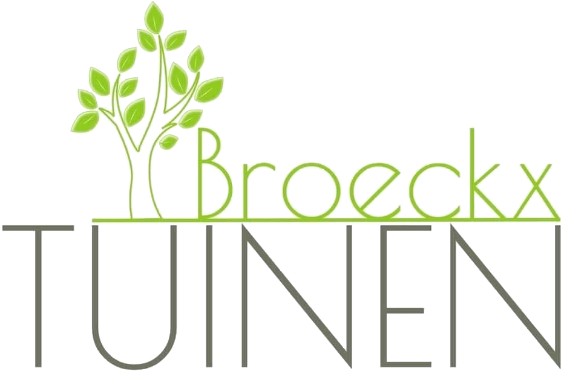
Vraag een plaatsbezoek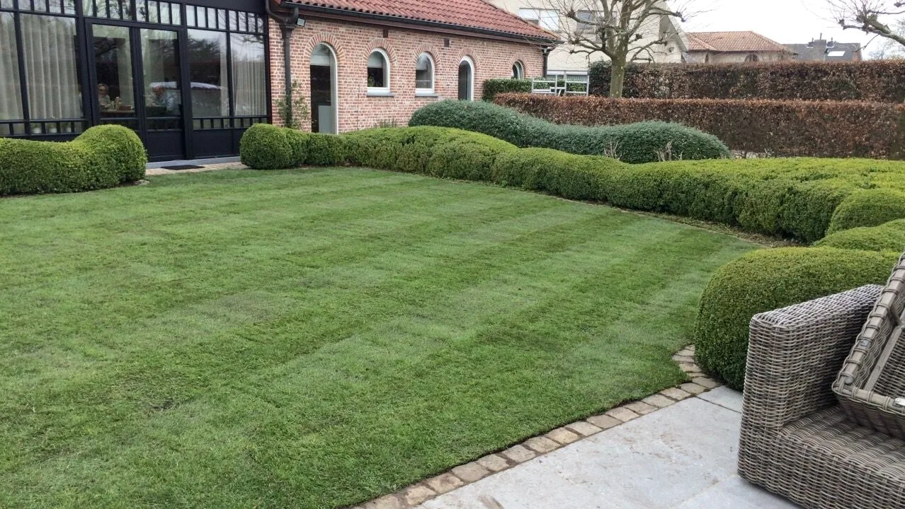
Een nieuwe tuin bij je nieuwbouw, een haag die strak in vorm moet, of een gazon dat eindelijk weer groen wordt. Tom en zijn ploeg doen het, met één vast aanspreekpunt van begin tot einde.
Werk je liever met één aannemer dan met vijf? Dankzij betrouwbare partners coördineren wij je volledige tuinproject.

Van een nieuwbouwtuin die nog volledig moet gebeuren tot een grondige make-over van je bestaande tuin.
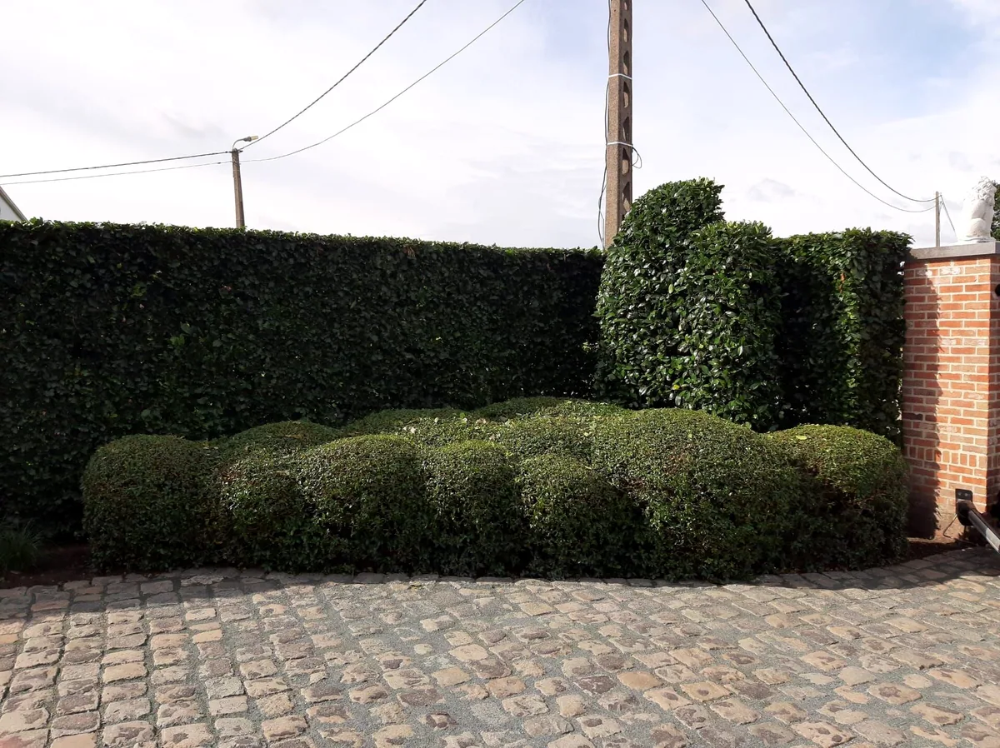
Wekelijks, maandelijks, per seizoen of één keer grondig. Zodat jij gewoon kan genieten.
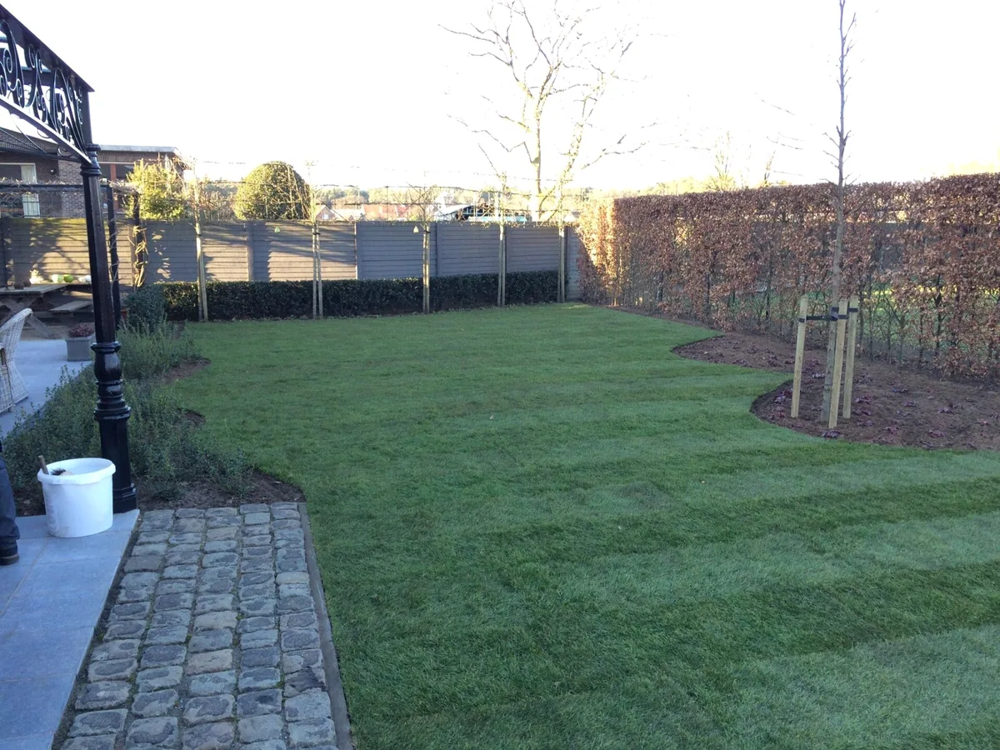
Kale plekken, mos of engerlingen? Soms is een nieuw gazon niet eens nodig. We komen eerst kijken.
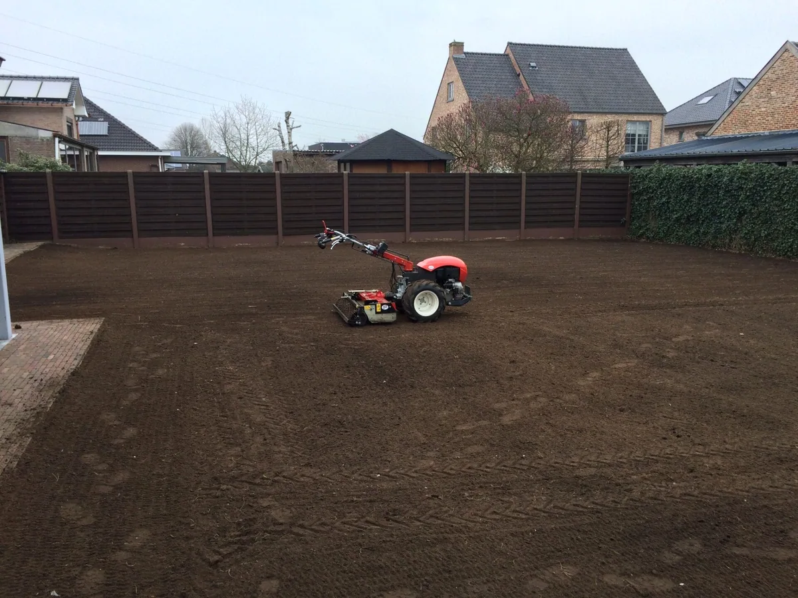
Een gezonde bodem is de basis voor een sterk gazon, gezonde planten en bomen die jaren mooi blijven. Daarom steken we veel tijd in de voorbereiding en werken we met kwalitatieve bodemverbeteraars.
Budgetvriendelijk. Vraagt wat meer tijd om uit te groeien.
Meteen een groen resultaat dat je snel kan gebruiken.
We maken voor een nieuw gazon vaak twee offertes, zodat je zelf kan kiezen.
Strakke hagen, buxus in vorm en gazons zonder één kale plek. Een greep uit ons werk.
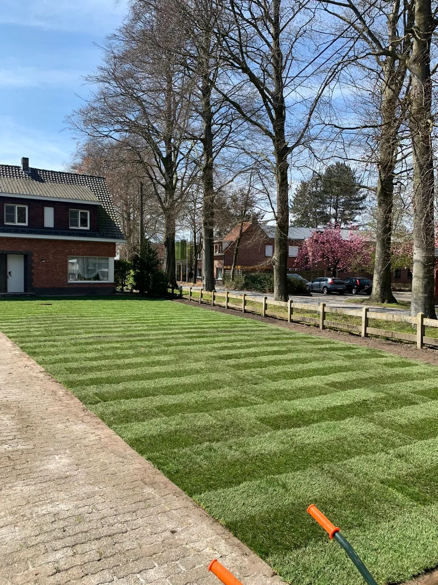
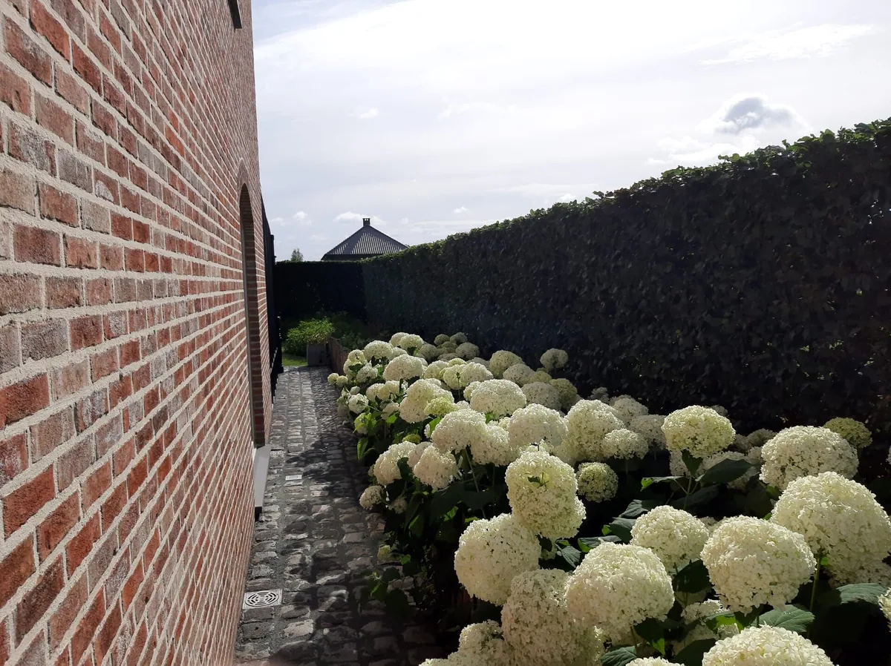
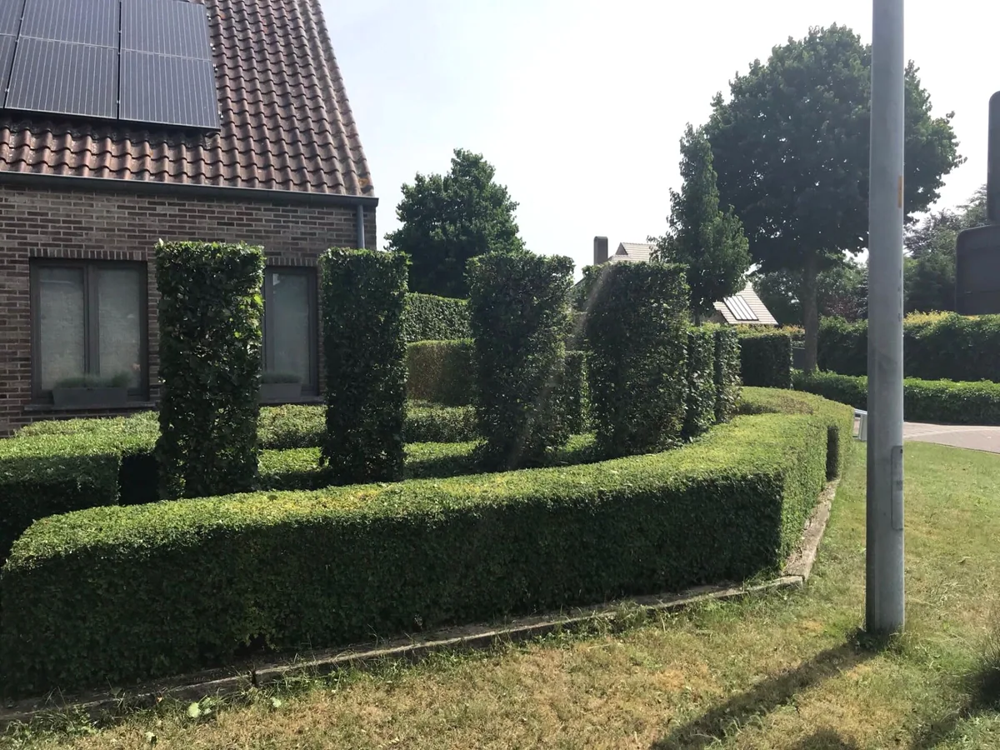
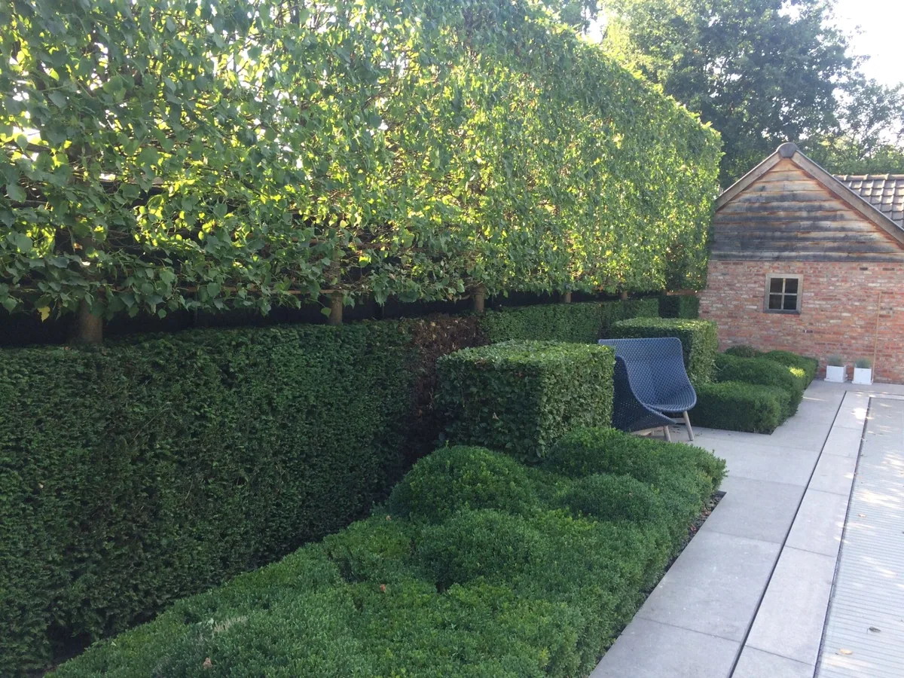
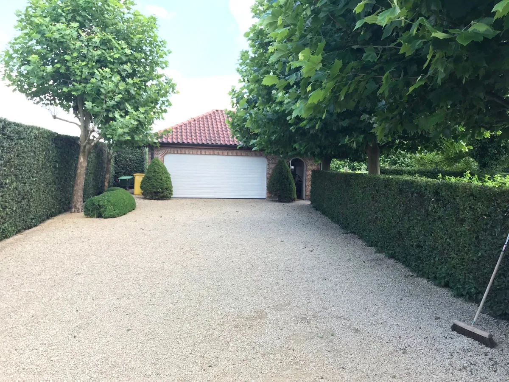
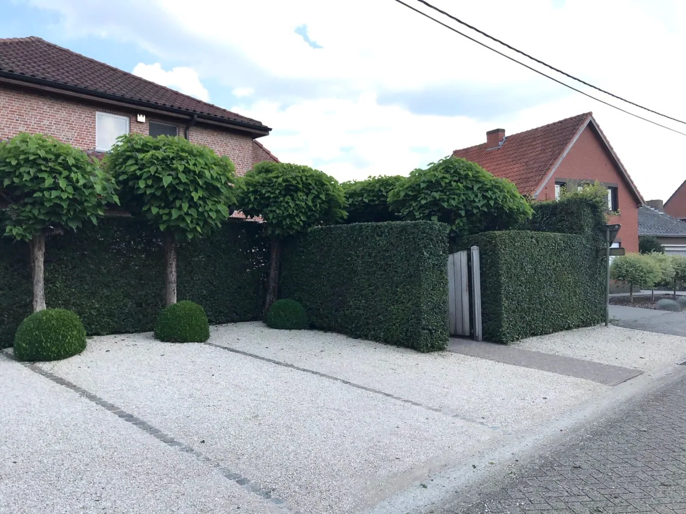
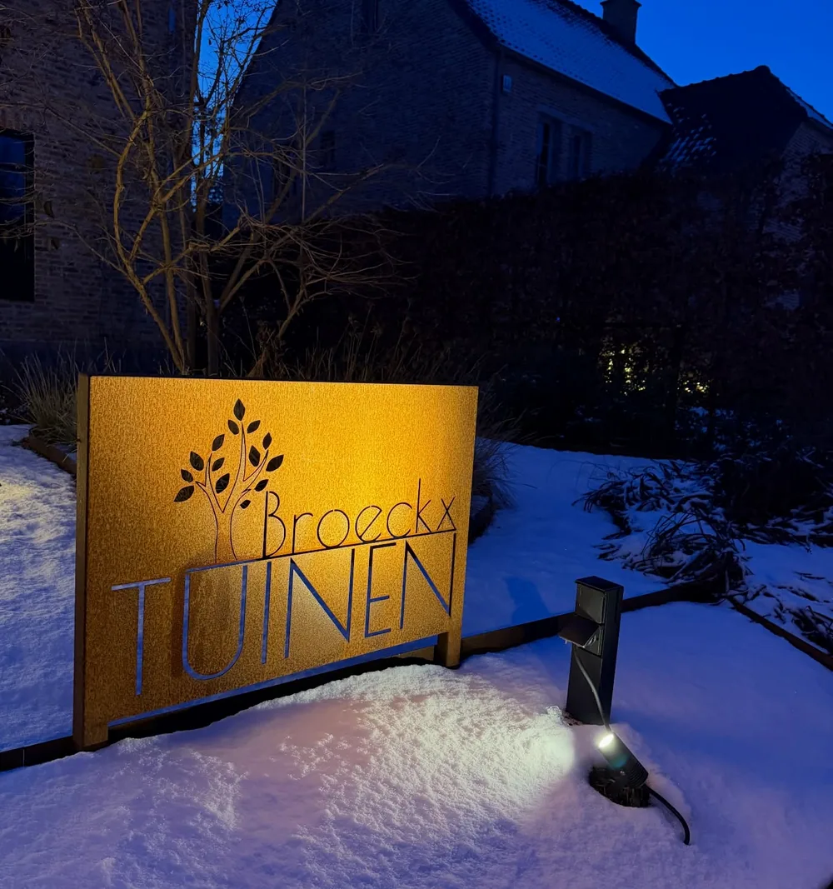
Tom Broeckx is een vakman met een passie voor groen. Elke dag vind je hem in de tuin, met evenveel goesting als op dag één.
Hij luistert eerst naar wat jij wil en denkt dan mee. Duidelijke afspraken, een nette werf en ook na de werken bereikbaar voor advies.
"Tom heeft de volledige tuin van onze nieuwbouwwoning aangelegd en het resultaat is echt prachtig. Tom denkt mee, houdt zich aan zijn afspraken en is altijd bereikbaar als je vragen hebt of advies nodig hebt."BBnjGoogle review
"Het was zeer aangenaam werken met Tom en zijn team. Correcte afspraken, kennis van zaken, passie voor de job!!. Timing werd zeer gerespecteerd."PPeter Van Glabbeek.Google review
"Wij hebben de gegevens van Tom doorgekregen na een vraag naar iemand lokaal in onze omgeving. Kregen snel antwoord en is dezelfde dag nog komen kijken om een idee van de omvang van het werk te krijgen."TT.Google review
Vertel ons wat je in gedachten hebt. Tom komt langs, bekijkt je tuin en bespreekt samen met jou wat mogelijk is.
Ik maakte deze demo voor jullie om te tonen wat er kan. Na een kort gesprek maak ik er iets veel persoonlijkers van, helemaal naar jullie wens.
Vrijblijvend. Ik kom langs of we bellen.
Op maat, op jullie eigen domein.
Geen voorschot. Jullie betalen pas als alles klaar is.
Hosting, domeinnaam en kleine wijzigingen, zoals nieuwe openingsuren.
Omdat een voorbeeld meer zegt dan een mail. Zo zien jullie meteen wat er kan, en het kost jullie niets.
Nee. Het gesprek is vrijblijvend. Vinden jullie het niks, dan is het daarmee gedaan.
Na ons gesprek staat jullie site binnen 10 tot 14 dagen online.
Zeker. Jullie domeinnaam kan gewoon blijven, de nieuwe site komt in de plaats van de oude.
Nee, dat doe ik op basis van ons gesprek. Eigen foto's zijn mooi meegenomen, maar niet nodig om te starten.